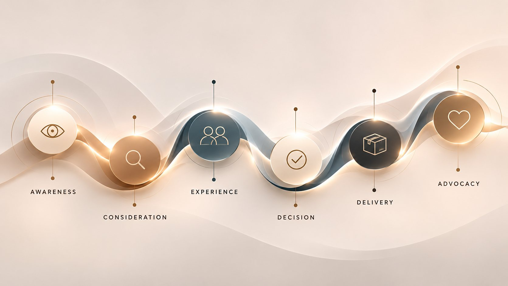

-
ObservationWhat we found
Online enquiries received an automatic acknowledgement within minutes, but a personal reply took several business days. Telephone enquiries were answered the same day.
-
Commercial significanceWhy it matters
Customers comparing several businesses often commit to the first that responds personally. Each delayed reply is a moment where interest can move elsewhere.
-
Recommended actionWhat should change
Set a same-day personal response standard for online enquiries, supported by a short reply guide in the brand's voice and a weekly review of response times.
Better customer experiences begin with understanding.
Apertura CX is a Melbourne customer experience consultancy specialising in customer journey mapping, experience audits and commercial strategy for founder-led businesses.
Explore our approach
Image 01
Human customer experience photograph
Desktop 4:5, mobile 4:5
We examine how customers discover, engage with and return to your business, identifying friction and developing practical recommendations that strengthen trust, conversion and loyalty.
Request a SnapshotThe thinking behind Apertura.
From the Italian apertura, meaning an opening, and the Latin aperire, to open or reveal. In photography, an aperture determines how much light enters the lens.
For Apertura CX, the idea is one of clarity, bringing a considered perspective to the customer experience.
The full definition
- Italian · apertura /aperˈtuːra/
- An opening. A space through which light passes, or something beyond becomes visible.
- Latin · aperire
- To open, uncover or reveal. To make accessible what was previously closed.
- In photography · aperture
- The opening in a lens that controls how much light enters.
Every brand is experienced long before it is chosen, and long after it is paid for.
Customer experience is shaped by every interaction a person has with your business, from their first impression and initial enquiry to the purchase, delivery and relationship that follows.
It moves between screen and space without pause. A polished digital experience cannot compensate for an indifferent welcome, just as exceptional service cannot make up for a booking that was never confirmed.
To the customer, these are not separate experiences. They are one continuous relationship.
Understanding the journey changes the experience.
Customer journey mapping reveals how people move through your business, from their first encounter to the relationships that follow.
Apertura CX examines each touchpoint across digital and physical environments, identifying where expectations are met, where friction occurs and where improvements can strengthen trust, conversion and loyalty.
The findings become a practical roadmap for your team and partners to act upon.

The six stages
Select a stage to see how it shows up online and in person.
01Awareness
The first impression begins before a conversation takes place.
- Digital
- A search result, a social post, a review left by a stranger.
- In person
- A shopfront, a recommendation over dinner, a building that catches the eye.
02Consideration
Interest grows through the questions asked and the answers received.
- Digital
- An enquiry form, an email, a message sent late at night.
- In person
- A telephone conversation, a question at the counter, a first appointment.
03Experience
The moment expectations meet reality.
- Digital
- A booking journey, a virtual appointment, an inspection arranged online.
- In person
- The welcome at the store, the venue or the display suite.
04Decision
The point at which confidence becomes commitment.
- Digital
- The checkout, a deposit, a contract ready to sign.
- In person
- A question resolved, a reassurance offered, the conversation that settles it.
05Delivery
The promise made, and how faithfully it is kept.
- Digital
- Confirmations, progress updates, a message when plans change.
- In person
- The delivery, the meal, the handover of keys.
06Advocacy
What people remember, share and choose to return to.
- Digital
- A review, a recommendation shared, an invitation to return.
- In person
- Being recognised when they return, bringing someone with them.
Image 03
Customer journey mapping and strategy work
Desktop 5:4, mobile 4:3
What happens between the promise and the experience?
Apertura examines the interactions that shape a customer's confidence in your business, from enquiries and bookings to service encounters, communication, delivery and aftercare.
We compare the experience customers actually receive with the standards and expectations your business intends to deliver.
How we measure what matters.
Every interaction influences how customers perceive a business, whether they choose to proceed and whether they return.
Apertura examines these moments through three measures of performance.
Trust
Where confidence is earned or lost.
Does the experience reflect the promise your brand makes?
Conversion
Where interest becomes a decision.
How easily and confidently can customers take the next step?
Loyalty
Where a transaction becomes a relationship.
What encourages customers to return, recommend and remain connected?
Considered findings. Practical outcomes.
Our work translates customer experience observations into clear findings, commercial priorities and practical recommendations.
The result is a structured plan your internal team or existing partners can use to make meaningful improvements.
Ways to work together.
Begin with a focused Snapshot, commission a full Diagnostic, or develop a deeper strategy with ongoing support. Implementation is led by your own team or partners, with further assistance available where required.
-
The Snapshot
$750 + GST
A focused assessment across customer-facing digital channels and one physical location, where applicable.
You receiveA one-page diagnosis identifying up to four points of friction, within five business days.
Request a Snapshot -
CX and retail growth Diagnostic
Individually quoted
A comprehensive customer journey assessment, from first impression to the relationships that follow.
You receiveA friction map, a commercial opportunity map and a practical 90-day action plan.
Explore the Diagnostic -
Strategy and ongoing advisory
Individually quoted
Deeper customer journey strategy, service standards, CRM and loyalty planning, specialist training and commercial guidance, scoped according to the business.
You receiveA practical strategy and roadmap for change.
Explore our services
Made for brands still shaped by the people who founded them.
Apertura CX works with founder-led businesses in retail, hospitality, property and premium services, where the customer experience is inseparable from the character of the brand.
Our recommendations are grounded in the realities of each business, its people, resources and ambitions. Meet the practice.
Outside in
We begin where customers experience the business.
Commercial first
Recommendations are weighed against value, resources and feasibility.
Yours to keep
Your team and partners can carry the work forward independently.
See what your customer journey could reveal.
Begin with an independent assessment of your customer experience and a clearer understanding of where trust, conversion and loyalty may be affected.
Request a Snapshot